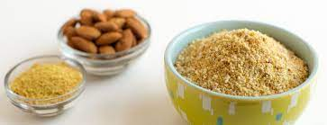

Faux Parmesan Cheese Seasoning

It doesn't really taste like parmesan, but it's pretty tasty and another way to season things if you're looking for something different! Noodles and broccoli are my personal favorites. Recipe taken from Forks Over Knives.
Ingredients
- 1 cup almond flour
- 1/2 cup nutritional yeast
- 1 tbs salt-free seasoning
Steps
- Mix it all together... and that's it! I usually double the recipe and dump it all into a Mason jar, then just shake it up
- Enjoy! :)